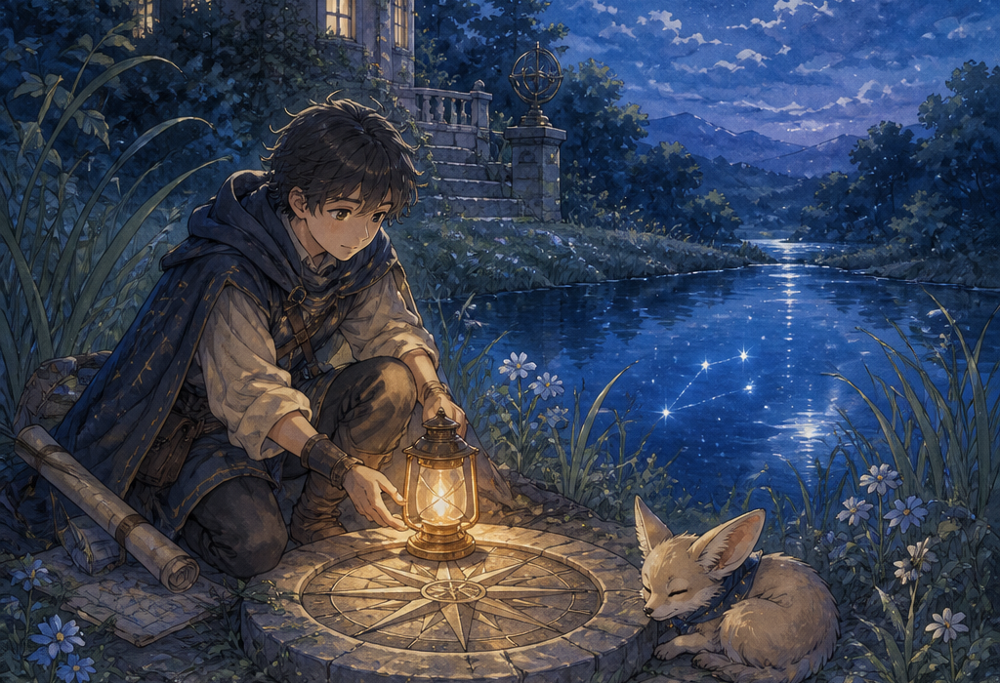

Written for the mapmakers who listen when the water redraws the shore.

Every chart in Ember Harbor began with a tide. Mira Solen carried hers in a brass chain and a pocket sextant, with Pip the fox padding at her side, though no one could explain why the southern pier stood six feet farther into the bay than the survey stakes allowed.
At dawn she measured twice. The water had edited the map. Pip sat in the center of her chalk spiral as if he had been waiting for the shape to finish.
In her loft above the canal, Mira pinned fresh vellum over the spiral and waited. The indigo lines thickened at dusk, as if the paper were absorbing a tide that never reached the floor. Pip knocked over a jar of gold leaf, and the leaf stuck to the wet ink in a perfect arc no surveyor had ever recorded.
From the lighthouse gallery, Keeper Arden pointed to a dark seam in the water. Mira traced it onto silk. When the seam met the pier's spiral, salt crystallized on the chart and closed the gold arc into a ring. Inside it she saw a second light, small and patient, waiting under the waves.
The chart did not point north. It pointed to the light the harbor had forgotten to name. Mira sealed the vellum with wax, hung it in the chandler's window, and let every sailor see the second light. Pip added one paw print in the corner.
That evening the equinox glow returned for a fourth night — something the old songs never promised. The copper roofs caught the last light, and for once the maps remembered with the sea.
Mira walked the pier again before breakfast. The stakes matched. The spiral was gone. Home was still home, only honest.